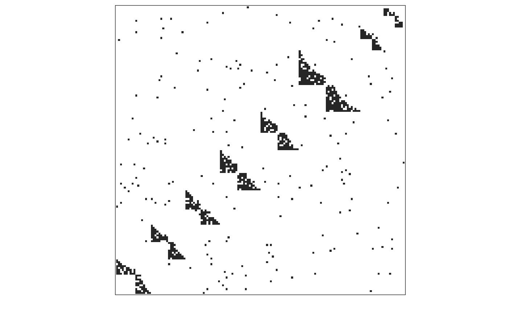
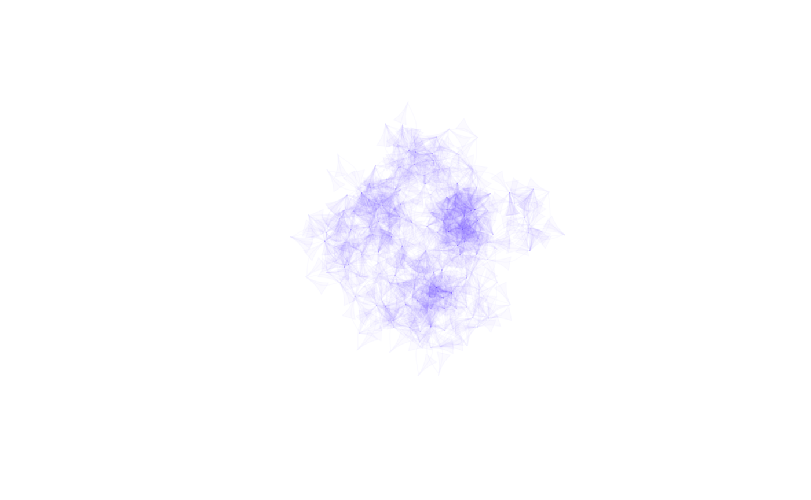
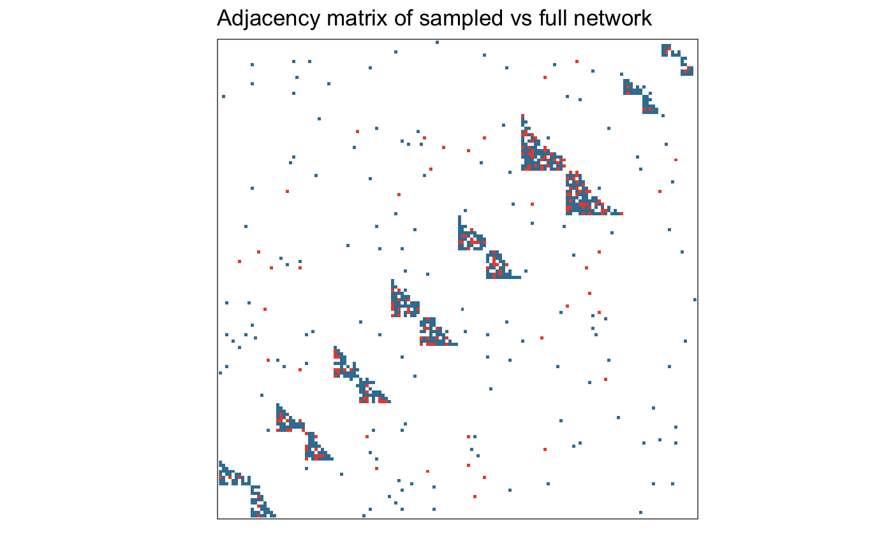
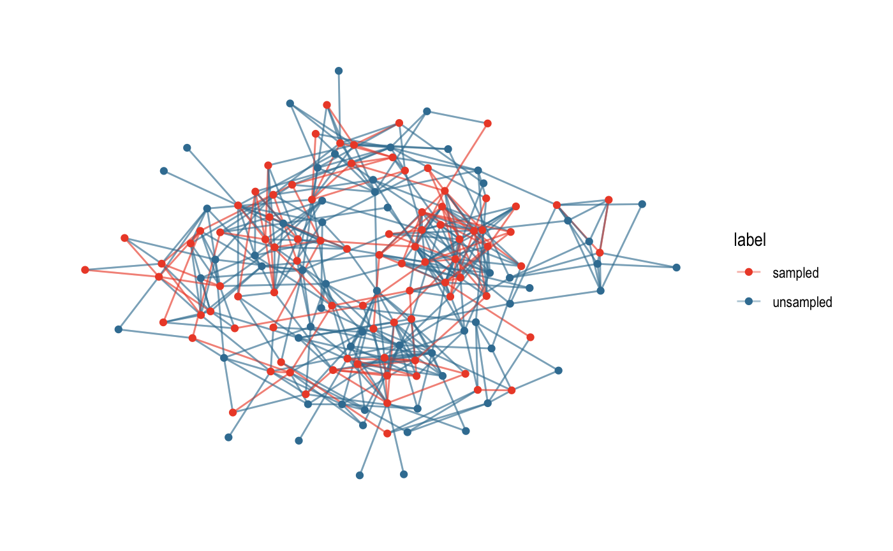
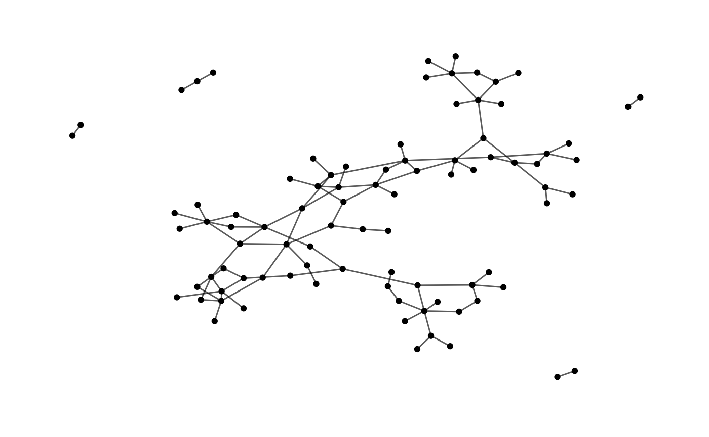
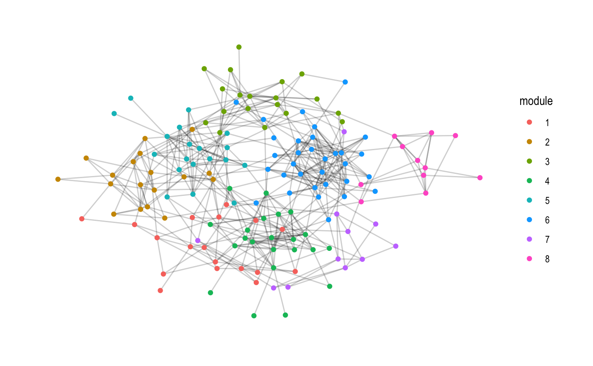

EcoNetGen lets you randomly generate a wide range of interaction networks with specified size, average degree, modularity, and topological structure. You can also sample nodes and links from within simulated networks randomly, by degree, by module, or by abundance. Simulations and sampling routines are implemented in ‘FORTRAN’, providing efficient generation times even for large networks. Basic visualization methods also included. Algorithms implemented here are described in de Aguiar et al. (2017) arXiv:1708.01242.
Installation
EcoNetGen is now on CRAN and can be installed in the usual way:
See NEWS for a list of the most recent changes to the development version and current CRAN release. You can install the current development version of EcoNetGen from GitHub with:
This way requires you have a recent FORTRAN compiler avialble on your machine.
Randomly generate networks
This is a basic example which generates a network. See ?netgen for documentation describing the parameter arguments. Setting verbose = FALSE (default) surpresses the output summary message.
library(EcoNetGen)
set.seed(123456) # for a reproducible simulation
network <- netgen(net_size = 150,
ave_module_size = 20,
min_module_size = 10,
min_submod_size = 5,
net_type = "bi-partite nested",
ave_degree = 10,
verbose = TRUE
)
#>
#> module count = 8
#> average degree = 6.10666666666667
#> average module size = 18.75
#> number of components = 1
#> size of largest component = 150We can plot the resulting igraph as an adjacency matrix:

Network igraph objects can also be plotted using the standard igraph plotting routines, for example:
library(igraph)
plot(network, vertex.size= 0, vertex.label=NA,
edge.color = rgb(.22,0,1,.02), vertex.shape="none",
edge.curved =TRUE, layout = layout_with_kk)
Sample from a network
set.seed(123456) # for a reproducible random sampling
sampled <- netsampler(network,
key_nodes_sampler = "degree",
neighbors_sampler = "random",
n_key_nodes = 50,
n_neighbors = 0.5 # 50%
)We can plot the adjacency network, coloring red the sampled nodes. Note that adj_plot objects are just ggplot graphs (geom_raster) under the hood, and can be modified with the usual ggplot arguments, such as adding a title and changing the color theme here.
library(ggplot2) # needed to modify plot
adj_plot(sampled) +
ggtitle("Adjacency matrix of sampled vs full network") +
scale_fill_manual(values = c("#ED4E33", "#3B7EA1"))
Don’t forget to check out the ggraph package, which isn’t required for EcoNetGen but provides a lot of additional great ways to plot your network. Here we plot the simulated network color-coding the sampled nodes and edges (indicated by the label “sampled” on vertices and edges):
library(ggraph)
ggraph(sampled, layout = 'kk') +
geom_edge_link(aes(color = label), alpha=0.4) +
geom_node_point(aes(color = label)) +
theme_graph() +
scale_color_manual(values = c("#ED4E33", "#3B7EA1")) +
scale_edge_color_manual(values = c("#ED4E33", "#3B7EA1"))
Or extract and plot just the sampled network:
subnet <- subgraph.edges(sampled,
E(sampled)[label=="sampled"])
ggraph(subnet, layout = 'graphopt') +
geom_edge_link(alpha=0.4) +
geom_node_point() +
theme_graph() 
A few example statistics
And we can compute common statistics from igraph as well. Here we confirm that clustering by “edge betweeness” gives us the expected number of modules:
We can check the size of each module as well:
module_sizes <- sizes(community)
module_sizes
#> Community sizes
#> 1 2 3 4 5 6 7 8
#> 18 18 19 22 19 32 11 11Average degree:
We can also label and plot the cluster membership:
ggraph(sampled, layout = 'kk') +
geom_edge_link(alpha=0.1) +
geom_node_point(aes(colour = module)) +
theme_graph()